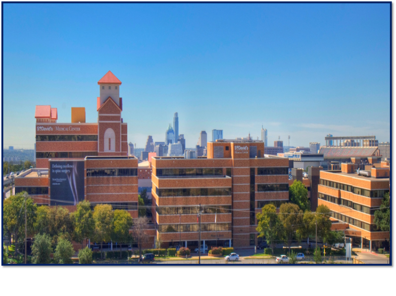

Hospitals
These hospitals are in central Austin, and they accept many insurances to cover your healthcare. Furthermore, they offer very good treatment; therefore, you should go to the one that’s nearsts to you. If you click on the address, it will show you their location on a map in which you can also follow the GPS.
St. David’s North Austin Medical Center
(512) 901-100012221 N Mopac Expy, Austin, TX 78758
St. David’s South Austin Medical Center
(512) 447-2211
901 W Ben White Blvd, Austin, TX 78704

St. David’s Medical Center
(512) 544-7111
919 E 32nd St, Austin, TX 78705
Dell Children's Medical Center of Central Texas
(512) 324-0000
4900 Mueller Blvd, Austin, TX 78723

Dell Seton Medical Center at The University of Texas
(512) 324-7000
1500 Red River St, Austin, TX 78701